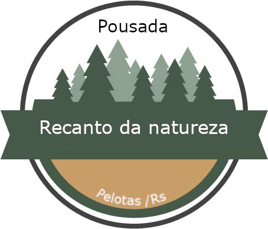

<!DOCTYPE html>
<html lang="pt br">
<head>
    <meta charset="UTF-8">
    <meta http-equiv="X-UA-Compatible" content="IE=edge">
    <meta name="viewport" content="width=device-width, initial-scale=1.0">
    <title>mapa</title>
    <style type="text/css">
        .menu ul li{
            
            background-color: #c89d68;
            color: white;
            float: left;
            width:270px;
            height: 40px;
            display: block;
            text-align: center;
            line-height: 40px;
            font-size: 20px;
            font-family: Arial, Helvetica, sans-serif;
        }
        .menu ul li:hover{
            background-color: #475949;
        }
        .menu ul{
            padding: 0px;
        }
        .menu ul ul{
            display: none;
        }
        .menu ul li:hover > ul{
            display: block;
        }
        .menu ul ul ul{
            margin-left: 202px;
        }
        
    </style>
    <link rel="stylesheet" href="eslilo.css">
    <header>
                   
        <div>
            <h1><b>Venha desfrutar do melhor que a natureza pode proporcionar</h1></b>
            
        </div>  
        
        
    </header>
</head> 


<body>
    
    
</body>
    <nav class="menu">
        <ul>
            <li>Home
                <ul>
                    <li><a href="index.html">Voltar</a></li>
                </ul>
            </li>
            <li>Hospedagem
                <ul>
                    <li><a href="valor.html" target="_self">Valores</a></li>
                    <li><a href="reserva.html" target="_self">Reserva</a></li>
                </ul>
            </li>
            <li>Endereço
                <ul>
                    <li><a href="mapa.html">Como chegar</a></li>
                </ul>
            </li>
            <li>Serviços
                <ul>
                    <li> <a href="passeio.html" target="_self">Passeio a cavalo</a></li>
                    <li><a href="piscina.html" target="_self">Piscina</a></li>
                    <li><a href="cafe.html" target="_self">Café da manha</a></li>
                    <li><a href="churrasqueira.html"target="_self">Churrasqueiras</a></li>
                    <li><a href="bar.html" target="_self">Bar</a></li>
                </ul>
            </li>
            <li>Contato
                <ul>
                    <li>(53) 98415-7585</li>                           
                    
                </ul>
            </li>
            
                
            
        </ul>
        
            <div class="localizacao">
            <iframe  src="https://www.google.com/maps/embed?pb=!1m28!1m12!1m3!1d217379.71911727035!2d-52.56004638675012!3d-31.645947213471818!2m3!1f0!2f0!3f0!3m2!1i1024!2i768!4f13.1!4m13!3e0!4m5!1s0x95104876f10dfe49%3A0x18cd959725e0398b!2sPelotas%20-%20RS!3m2!1d-31.769965!2d-52.3313261!4m5!1s0x95103c7479c0ada9%3A0xa6896da1e39cf385!2sQuilombo%2C%20Pelotas%20-%20RS!3m2!1d-31.5228297!2d-52.4711163!5e0!3m2!1spt-BR!2sbr!4v1630811092607!5m2!1spt-BR!2sbr" width="400" height="300" style="border:0;" allowfullscreen="" loading="lazy"></iframe>
            </div>
       
    </nav>
    <center>
        <div class="mapa">
            <h2>Estamos localizados a 35 km do centro de pelotas na localidade do Quilombo</h2>
        </div>
    </center>

</html>